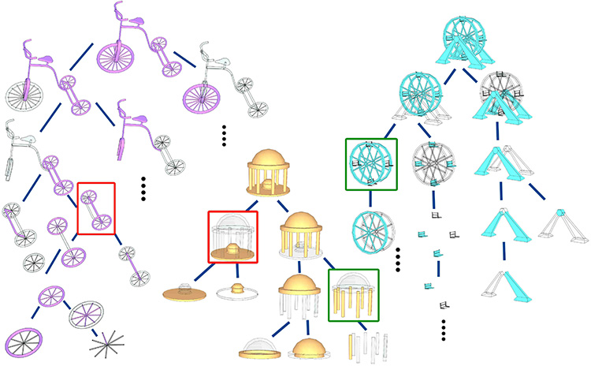
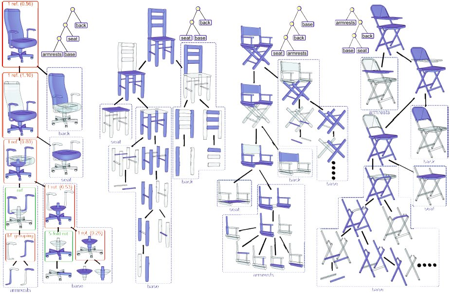
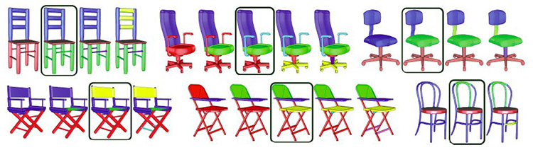

Symmetry Hierarchy of Man-Made Objects
Yanzhen Wang1,2,
Kai Xu1,2,
Jun Li2, Hao Zhang1, Ariel Shamir3, Ligang Liu4, Zhiquan Cheng2, Yueshan Xiong2
1Simon
Fraser University, 2National
University of
Defense Technology, 3The Interdisciplinary Center, 4Zhejiang University
Computer Graphics Forum (Eurographics 2011), 30(2)

Figure 1: Symmetry hierarchy provides a structural organization
of an object’s parts. Parts associated with a node
are colored blue. Each node represents either a grouping by
symmetry (green) or assembly (red) by connectivity.
|
Abstract
|
We introduce symmetry hierarchy of man-made objects, a high-level structural representation of a 3D model
providing a symmetry-induced, hierarchical organization of the model’s constituent parts. Given an input mesh,
we segment it into primitive parts and build an initial graph which encodes inter-part symmetries and connectivity
relations, as well as self-symmetries in individual parts. The symmetry hierarchy is constructed from the initial
graph via recursive graph contraction which either groups parts by symmetry or assembles connected sets of
parts. The order of graph contraction is dictated by a set of precedence rules designed primarily to respect the law
of symmetry in perceptual grouping and the principle of compactness of representation. We show that symmetry
hierarchy naturally implies a hierarchical segmentation that is more meaningful than those produced by local
geometric considerations. We also develop an application of symmetry hierarchies for structural shape editing.
|
|
|
Paper |
|
|
|
Slides |
|
|
|
Video |
|
|
|
| Images |

Figure
2: A set of chairs with their symmetry hierarchies. Self-symmetries and connectivity strengths (in brackets) at the
nodes are shown for one model (red: assembly nodes; green: grouping nodes; “bf. grouping”: assembly before grouping). The
semantic tags are not computed by our algorithm but are shown here to illustrate how functional parts (back, seat, etc.) are
grouped together and revealed by our symmetry hierarchies.

Figure
3: Hierarchical segmentations of several chair models. Results marked by boxes produce semantic parts: back, seat,
legs, and armrests (if any), e.g., compare to the symbolic hierarchies shown in Figure 2. Note the imperfect result for the last
chair as part of the back is not separated from the legs; this is due to the initial segmentation unable to do so.
|
|
|
| Thanks |
We thank all the reviewers for their
helpful comments. Mesh models shown in the paper were
from the Princeton Shape Benchmark, SHREC’09, and Ran
Gal. This work was supported in part by an NSERC Grant
(No. 611370), the Israel Ministry of Science and Education,
the Israel Science Foundation, the National Natural
Science Foundation of China (No. 61070071), the Research
Fund for the Doctoral Program of Higher Education (No.
20104307110003), and the China Scholarship Council.
|
|
|
| Bibtex |
@article
{wang_eg11,
title = {Symmetry Hierarchy of Man-Made Objects},
author
= {Yanzhen Wang and Kai Xu and Jun Li and Hao Zhang and Ariel Shamir and Ligang Liu and Zhiquan Cheng and Yueshan Xiong}
journal
= {Computer Graphics Forum (Eurographics 2011)},
volume
= {30},
number
= {2},
pages
= {287--296},
year
= {2011}
}
|
 
 
|